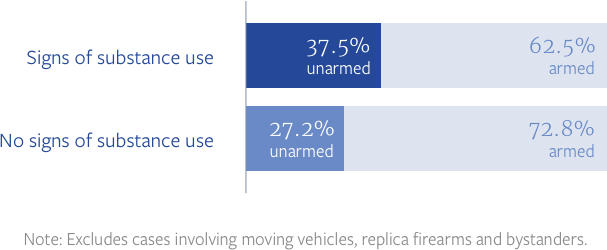
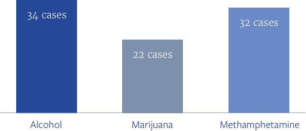

Drugs and alcohol pervasive in San Bernardino County police shootings

Deputy Marc Beitler pulled up to a large ranch-style house on Avenue G in a section of Yucaipa. It was at about 6:30 a.m. on a Monday morning in late summer 2012.
He was responding to a 911 call from Katherine Wann. Her 23-year-old son Ted was delusional. He thought someone was chasing him — something about an orange car.
“He was on drugs,” she said. “I needed help.”
Her son struggled with heroin addiction. He was rail thin, 158 pounds on a 6-foot frame.
Beitler’s calm demeanor – as if this were a routine call – reassured the worried mother.
“It seemed like he was so understanding,” she recalled.
But the patrol car spooked Ted, who hid in a neighbor’s shed made from a shipping container. Beitler stepped inside, alone, to get him out, according to district attorney records.
He was on drugs ... I needed help.
“Help! Someone, help!” came a cry from inside, according to a man in a neighboring yard. Then the man heard a scuffle and someone say “put the shovel down.” Then, gunfire.
The deputy emerged, his uniform “dirtied up,” his hands bloodied and his sheriff’s name tag hanging from his uniform.
Beitler declined to comment for this story, but according to court records said under oath that Ted pushed him and threatened him with a shovel.
The 250-pound deputy responded with force. He punched Ted several times in the head, brought out his steel baton and swung it down on Ted’s chest.
He ultimately fired five rounds from his .45-caliber handgun, striking Ted in the neck, shoulder, chest and top of the head. One of the bullets went through Ted’s right hand.
Years later, Ted’s mother still wonders: what if the deputy had waited outside the shed for Ted to calm down?
“Ted wasn’t going anywhere,” she said. “All he had to do was sit there and wait.
“There was no emergency,” she added. “And, to take someone’s life like that is just wrong.”
DRUG AND ALCOHOL USERS SHOT BY OFFICERS
An investigation by KPCC and The San Bernardino Sun found more than 70 percent of 103 people shot by officers in San Bernardino County in a six-year period disclosed or tested positive for substance use, including alcohol, marijuana, prescription drugs or illegal substances.
An investigation by KPCC and The San Bernardino Sun found more than 70 percent of people shot by officers in San Bernardino County in a recent six-year span showed signs of drug or alcohol use. That’s more than double the rate in L.A. County based on the same analysis there.
But public health data show similar rates of drug overdose deaths in the two counties, which experts say is an indicator drug use is also about the same.
KPCC and The San Bernardino Sun collected six years of police shooting records from the San Bernardino County District Attorney’s Office. The records enhanced KPCC’s database of police shootings in Los Angeles County built in 2015.
The counties’ police shootings overall show similar patterns: police shootings occur at essentially the same rate, a quarter of people shot by police are unarmed in both counties. And, relative to the population, black people are more likely to be killed by police in both counties - though the rate is lower in San Bernardino.
The principal difference between the two counties centered on the stratospheric percentage of shootings in San Bernardino County involving people who showed signs of drugs and alcohol use.
Deeper analysis by KPCC and The Sun found an alarming pattern among shootings of people who showed signs of using alcohol or drugs: officers in both counties were more likely to shoot them after mistaking them for being armed — when they were not.
In case after case, district attorney reports of the incidents show officers said these suspects reached for their waistband or their hands disappeared. The officer shot, but the person was unarmed. These “perception” shootings also happened among those who showed no signs of drug and alcohol use. But they were most common when the person shot had used substances.
PEOPLE WHO WERE MISTAKEN FOR ARMED
In 175 cases in San Bernardino and Los Angeles Counties, officers shot suspects after their hands disappeared or they reached for their waistband. Often those suspects were armed. But mistakes were more common when suspects showed signs of alcohol and drug use.
The finding comes amid a national conversation about officers using deadly force too frequently with certain groups – those who are mentally ill or black or brown. Until now, the pervasiveness of drug and alcohol use in subjects of police shootings in Southern California had not been publicly known.
The reasons for the high rate in San Bernardino County aren’t completely clear.
A 2011 federally-funded study of eight cities around the country found that in just under half of the cases when police put hands on someone – or used greater force – the officer reported believing the person to be impaired.
“We know that drugs and alcohol are involved in a great deal of what we do,” said San Bernardino Sheriff’s Captain Robert O’Brine, who oversees training in the department. “We are called for people who are under the influence of alcohol, people who are under the influence of narcotics or those who are having mental crises.”
The department had never examined substance use as factor in deputy shootings.
“Why you’re seeing that number in those officer involved shootings? I’m afraid I can’t answer that,” O’Brine said.
He said three years ago the department began giving new recruits mandatory crisis intervention training, which includes strategies for dealing with those in mental crisis as well as those showing signs of drug and alcohol use. He’s working on getting all officers through crisis intervention training but also said some techniques they’ve been learning for years.
“We want our deputies always to try to de-escalate potential violent encounters before using any force,” San Bernardino Sheriff John McMahon said in a written statement. “We provide our deputies with extensive Crisis Intervention Training and equip them with less than lethal force options.”
TYPES OF SUBSTANCE BREAK DOWN
Alcohol, methamphetamine and marijuana were among the most common substances used by people shot by law enforcement in San Bernardino County.
WHO'S A THREAT
Experts say the crux of the issue involves officers’ ability to perceive deadly threats. The behavior of drug users often seems threatening when it may not be.
“People who are ingesting stimulants in particular can act irrational,” said Bruce Goldberger, a professor of toxicology at the University of Florida. "They lose touch with reality, and they simply cannot react normally.
“If the police officer says step to the right,” he added, “they may not be able to step to the right because they may not comprehend that instruction.”
He said it’s not just a San Bernardino problem.
“It happens everywhere,” Goldberger said.
William Terrill, a professor of criminal justice at Arizona State University who studies use of force, said unpredictable behavior puts cops on edge.
“They are thinking of [drug and alcohol users] in the context of unpredictability, and they read it as potential danger,” he said.

Deputy Carolyn Chadwell was tearful when she recounted her shooting to investigators in a recorded interview that was released during a lawsuit.
Chadwell was responding to a domestic violence call in June 2012 when she pulled up to a duplex in the high desert community of Apple Valley. She passed under the adobe-style arch and knocked on the door. No one answered so she and another deputy stepped inside.
The entire event was captured by Chadwell’s belt recorder, which later became part of a court case.
The deputies found a stereo cranked up and TV blasting – residents were clearly avoiding law enforcement. Deputies found the husband and wife hiding in the bathroom with the shower running. Chadwell separated the couple and sat down with the wife, Penny Trent.

“How did he put his hands on you?” Chadwell asked.
“We’ve just been arguing,” Trent said, her wet hair matted around her face.
Chadwell searched the woman’s small frame for injuries and zeroed in on a bruise on Trent’s arm. Trent insisted it was an accident.
“When does it come to a stop?” Chadwell asked her. “When do you stop being his punching bag?”
Chadwell arrested the husband, Wayne Trent. She loaded him into the back of a squad car.
Then, Chadwell dug out a card listing domestic violence resources and headed back toward the house to give it to Trent. On the audio recording, you can hear the wind and the sound of the microphone rubbing with every step.
Then suddenly, it goes quiet and Chadwell calls out: “Penny, where is your other arm?”
Less than a second later, you can hear Chadwell firing two rounds from her gun, followed by more microphone noise as she scrambles out.
Penny, where is your other arm?
“She got a nervous look on her face,” Chadwell blurts out to the other deputy on the scene. “I don’t know. I shot twice.”
Deputy Kristen Mitchell rushed to the door. Trent’s injuries were minor: a bullet grazed her shin. District attorney records show Trent was unarmed.
Both deputies started barking orders: get on the ground, put your hands behind your back.
“I was just sitting on the couch,” Trent said. “I didn’t do anything.”

Yet the deputies pulled her in for questioning. Reports show they were investigating assault with a deadly weapon.
During the interview, she told detectives she had taken a prescribed opioid that morning, for back pain.
In a report, the detective said Penny told him she’d become addicted. The detective asked if her husband was addicted, too. Penny said “OxyContin is very addicting.” The detective wrote it down.
OxyContin is a powerful pain killer and can cause people to feel sleepy, spacey and high.
Officers got a warrant to search her house and found two pill bottles on the couch with Penny’s name on the labels: Oxycodone and OxyContin.
Trent could not be reached for comment on this story. Trent’s lawyer Jerry Steering said he thinks the search was done to protect the department from a lawsuit.
“They are looking for dirt on her,” Steering said. “They want to find pills. They want to find drugs. They want to find guns. They want to find knives. They want to find anything that’s going to make her look bad.”

Investigators waited five days before interviewing Chadwell about the shooting. These interviews are often shielded from public view in California. Chadwell’s was made public through Trent’s lawsuit – as were the tapes from her belt recorder.
With her lawyer sitting beside her, Chadwell told detectives she feared Trent could shoot her or stab her, describing herself as being trapped in a “kill zone” in the living room, with no escape.
“The look on her face went from being blank – thousand-yard stare – to an angry, crazy, like she was going to kill me,” Chadwell told investigators, through sobs.
Chadwell would not comment for this story. According to her lawyer, Michael Schwartz, she voluntarily left the department after the shooting. He said Chadwell’s decision to shoot was reasonable, and he believes the shooting was found in policy.
Department officials would not comment on the specific case. In his written statement, McMahon said he has “an unbiased and fair process in place” for reviewing shootings.
“An extensive investigation is prepared and reviewed by the District Attorney’s Office who will make an independent decision if the shooting was justified,” he said.
San Bernardino County agreed to pay Trent $600,000 to settle her lawsuit claiming civil rights violations. The county did not admit any wrongdoing.
“We’re the first people to admit we’ve made a mistake,” said O’Brine, who heads the San Bernardino Sheriff’s training division.
The D.A. reviewed the case and did not file charges against anyone. Not Penny. And not her husband, who denied abusing his wife. And not Chadwell.
The look on her face went from being blank – thousand-yard stare – to an angry, crazy, like she was going to kill me.
In San Bernardino County, the district attorney hasn’t prosecuted an officer for a shooting in 11 years. In Los Angeles, it’s been 16 years.
Federal law gives officers wide latitude to use deadly force if in fear for their lives or the lives of others, and prosecutors often cite language from U.S. Supreme Court rulings when they decline to file charges in shootings.
District Attorney Michael Ramos declined to be interviewed for this story.
Outside California, a controversial police shooting in Chicago in 2014 prompted a federal investigation.
The Chicago Police Department shot Laquan McDonald - a 17-year-old boy who had ingested PCP.
The following year, a judge forced the city to release video of the shooting. It showed an officer firing 16 shots at the teen, who had a knife, prompting public outcry and allegations of a cover up.
Federal authorities launched an investigation into the department and found a troubling pattern of unreasonable force. The U.S. Department of Justice said CPD officers “unnecessarily endanger themselves and others” by taking actions that lead to “unnecessary and avoidable shootings.”
It also found the department failed to hold officers accountable for unreasonable use of force, sending “a dangerous message to officers and the public that unreasonable force by CPD officers will be tolerated.”
JUDGING IMPAIRMENT
Terrill, the ASU professor, said labeling someone as a drug user can sometimes offer officers more protection after a shooting. He said studies show in use of force cases, officers report suspects as impaired much more often than third parties do. And he doesn’t attribute it to skill.
“It’s an indication to me that officers are checking that box or saying that they are under the influence in a more sensitive type of way,” Terrill said. “Whether it's CYA” – cover your a-- – “whether it's defensive, whether it’s victim blaming or whether it’s really a perception of danger.”

Wann, whose son Ted was killed by a San Bernardino Sheriff’s deputy in a neighbor’s shed, said she felt the department was more interested in protecting itself than figuring out what went wrong.
After graduating high school, Ted became an EMT, saving a man from a heart attack and once delivering a baby, she said.
She’s not sure when the drug use started, but she knows he began taking OxyContin pills. When those got expensive, he turned to a cheaper high: heroin.
She hated the constant, aching feeling that she could lose her youngest to an overdose.
“Those drugs just take away the person ... They just control their whole lives,” Wann said. “I knew something was going to happen sooner or later.”
After Beitler shot Ted, the sheriff’s investigators searched the family’s property in Yucaipa, including the trailer where Ted lived. They dug through his trash, finding an open syringe and spoon.
Sheriff’s investigators tested the brown solid material scraped from the metal spoon as part of the investigation into the shooting. It was heroin.
After he died, a toxicology report found his blood contained marijuana, alcohol, methamphetamine and morphine, according to district attorney records.
“The sad part about the whole thing is it could have totally been prevented,” Wann said.
Those drugs just take away the person ... They just control their whole lives. I knew something was going to happen sooner or later.
The finding that a high percentage of people shot by officers in San Bernardino County showed signs of drug and alcohol use comes as California and other parts of the country gradually retreat from America’s War on Drugs.
SUBSTANCE USE AND OFFICER INVOLVED SHOOTINGS, BY COUNTY
In L.A. County, 33 percent of people shot by police showed signs of substance use, according to district attorney records. In San Bernardino County, the rate was more than double.
Californians led the charge, passing laws legalizing marijuana use and relaxing sentences for other drug possessions in a matter of less than a decade, resulting in the release of thousands from prison and a shift of priorities among police.
Earlier this year, McMahon, the sheriff, said he pulled resources from street-level narcotics busts and threw them at criminal gang activity: illegal gun possession, human trafficking and killings.
“It wasn’t making sense to target those crimes which are now misdemeanors,” McMahon said.
Public health experts see chronic substance use not as a crime, but as a medical issue, not unlike mental illness. And just as officers are reevaluating approaches to people in mental health crisis, advocates said, they should begin to reconsider methods of intervening with drug and alcohol users.
“Conceptually, public opinion is absolutely moving to the public health approach,” said Margaret Dooley-Sammuli, an advocate with the ACLU of California and a proponent of decriminalization of drug use. “The challenge is: What does that actually look like on the street?”
But in comparison to cities like Chicago and Los Angeles, there has been little public scrutiny and even less public outcry in San Bernardino County over officer-involved shootings.
In Los Angeles, civilian groups have been formed to oversee the city police and county sheriff, and advocates routinely appear at meetings and at times their protests have shut down proceedings. The Los Angeles Police Commission determines whether officers followed policy in use of force incidents.
There are no such watchdogs over San Bernardino’s largest law enforcement agencies – not the sheriff’s department nor San Bernardino city.
Terrance Stone, a member of the African American Advisory Committee for the San Bernardino Police Department, said when the group met in March, it was searching for something to discuss.
“Not a lot has been happening,” Stone said. “There was not a lot to talk about.”

ZOMBIE
Ken Bossolono was on his morning walk on a Sunday, when he saw a San Bernardino County Sheriff’s deputy pull up to a parking lot across from the mobile home park where he lives.
“Get down! Get down!” he remembers hearing. “The guy wasn’t doing what he was told.”
The disobedient man was 32-year-old Merlyn King. He was homeless and his mother later told detectives he had a long history of mental illness. He refused to take his medication because he didn’t want to be labeled as someone who had mental illness, she said, according to district attorney records.
But, she told investigators he did use LSD and methamphetamine.
That morning in May 2011, King was waving his arms and talking to himself. He startled riders at the Yucca Valley Park and Ride on Route 62, the busy desert road that stretches from North Palm Springs to Joshua Tree National Park.
One witness said he looked like a “zombie.” Someone called 911 to report his bizarre behavior.
Deputy Allen Freeman responded to the call and approached King.

Rather than follow Freeman’s commands to get down, King drew closer to the deputy. Freeman used his Taser, according to district attorney records, but said it didn’t affect him.
Freeman told investigators he was afraid King would take his service weapon. So he said he fired two bullets. King fell to the ground and died. He was unarmed, according to the records.
One witness told investigators Freeman was about 5 feet away when he shot King. Another put the distance at 7 to 10 feet.
Bossolono was never interviewed by authorities, but he recalls King being farther away when he was shot, some 20 feet.
“It kind of irritated me,” said Bossolono, a retired iron worker, as he stood on the asphalt lot watching cars speed by. A few feet away, a Joshua tree, arms gnarled and thin, shaded a wooden cross painted white, placed in a planter in the parking lot.
Like many thick-skinned desert dwellers who support law and order, Bossolono is not one to give excuses to people who don’t follow orders. Officers have tough job, he said. They are called out to intervene in all types of situations.
On the other hand, he questions whether the deputy needed to pull his gun.
“I don’t know if he should’ve,” Bossolono said, or “if there were other ways to call for help.”
The department wouldn’t say whether the deputy had violated policy – those decisions are kept secret.